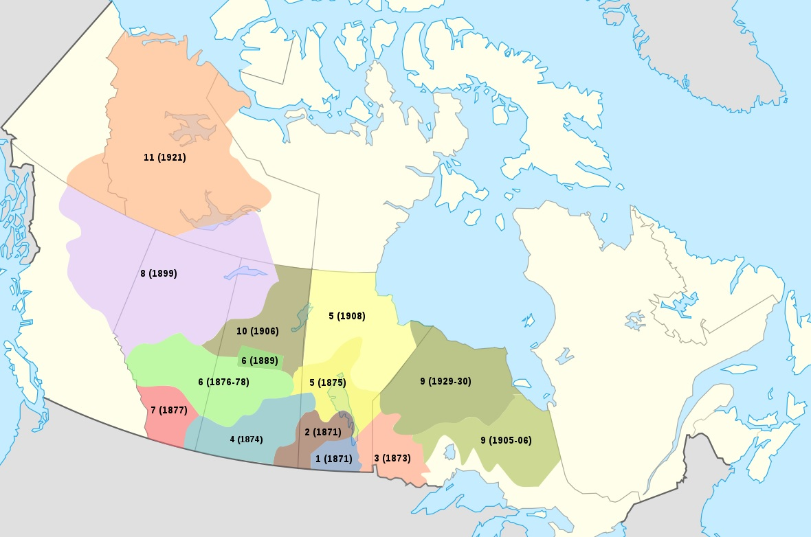

About The Numbered Treaties
The Numbered Treaties were a series of 11 treaties made between the Crown and First Nations from 1871 to 1921. They cover the area between the Lake of the Woods (northern Ontario, southern Manitoba) to the Rocky Mountains (northeastern British Columbia and interior Plains of Alberta) to the Beaufort Sea (north of Yukon and the Northwest Territories). The treaties provided the Crown with land for industrial development and white settlement. In exchange for their traditional territory, government negotiators made various promises to First Nations, both orally and in the written texts of the treaties. These include special rights to treaty lands and the distribution of cash payments, hunting and fishing tools, farming supplies, and the like. These terms of agreement are controversial and contested. To this day, the Numbered Treaties have ongoing legal and socio-economic impacts on Indigenous communities. The creation of reserves, schools and other instruments of assimilation have affected Indigenous cultures, customs and traditional ways of life. In addition, ongoing disputes about the oral and written terms of the treaties pertaining to land use, fishing and hunting rights, natural resource use, and the like, have led to modern land claims. In order to address concerns about treaty fulfilment, the federal government established a policy recognizing comprehensive and specific claims in 1973. In spite of inadequacies in the treaty-making process, the Numbered Treaties have helped to guide the relationship between the federal government and First Nation peoples by providing a context of mutual responsibilities and rights. As modern land claims are resolved and concluded, the Canadian government and treaty First Nations work together towards improving the lives of Indigenous peoples.
Learn More:
Click this link to view in YouTube
Information about Treaty 5:
Communities Involved:
- First Nations tribes located in the northern regions of Saskatchewan, Manitoba, and Ontario
- Saulteaux tribes
- Swampy Cree tribes including the number of bands that inhabited the Beren's River region and the Norway House region
Agreed Upon Provisions:
- 160 acres for farming per family of 5
- The right to hunt, fish and trap
- Annuities paid annually, $5 per person
- Chiefs and headmen provided with clothing every 3 years
- $500 per head and farm stock, tools, equipment and flags presented once
- Numerous tools, seed and animals for every family and band cultivating on a reserve
Historical Documents Involved:
- Treaty No. 5 Text
- Adhesion by Saulteaux or Chippewa
- Adhesion by Saulteaux or Chippewa and Cree
- Adhesion to Treaty 5 by Split Lake and Nelson House
- Adhesion to treaty no. 5 - 1908 - Norway House, Cross Lake, and Fisher River